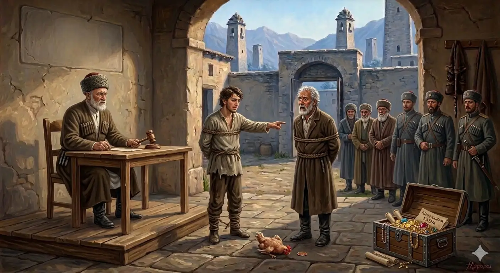

И.А. Дахкильгов. Хьехаме дувцарш - поучительные рассказы-притчи.
И.А. Дахкильгов. Хьехаме дувцарш - поучительные рассказы-притчи. Из ингушского фольклора.

Беррига бехк цун ба
Наьха котам лочкъа а яь, цӀаенай цхьан кӀаьнко. Из гӀулакх хоза а хийтта, дас ший воӀ хоаставаьв. Къоал мерзденнад воӀа. Шу далалехьа чура баьккха, наьха етт боалабаьб цо. Дас тӀатеӀӀа могаваьев. Шу шерга додаш, бокъонца вола къу кхийнав воӀах. Цкъа сов майра ваьннача воӀо воккхача аьлан ганза къоал даьд. Циггач лаьцав. Корта баккха аьнна, суд яьй. ТӀаккха судахочо аьннад, тӀехьара дош ала бокъо я хьа, аьнна. ТӀаккха воӀо аьнна хиннад, йоах: - Сона къоал мерздаьр, из сона могадаьр, ший ханнахьа со соца ца ваьр ва шоана из дӀа-а вагӀаш вола са да. Соца нийсса бехк цун а ба шоана. Са корта боаккхача цун корта а баккха оаш. - Бакъдий из? - аьнна, судахочо гучадаьккхад зӀамига саг бакълувш хинналга. - Хьоца нийсса бехк хинна Ӏац из, - аьннад, - беррига бехк цох боал. ТӀаккха судахочо ший кхел хийцай: кхы къоал ма делахь, аьнна, воӀ дӀахийцав, даь корта дӀабахийта кхел яьй.
РУССКИЙ
Во всем он виноват
Некий мальчик где-то украл курицу и принес ее домой. Отец похвалил сына. Мальчику понравилось воровство. И года не прошло, как сын уже привел чужую корову. И тут отец всячески расхвалил сына. Шли годы, сын стал заправским вором. Обнаглев, он решил унести казну именитого князя и попался. Суд приговорил его к отсечению головы. Судья предоставил вору последнее слово, и тогда вор сказал: - Во-он сидит мой отец, который привил мне вкус к воровству, который поощрял меня к нему, который вовремя не остановил меня. На нем столько же вины, сколько и на мне. Если рубите мою голову, то тоже самое делайте и с ним. - Правда все это? - поинтересовался судья, докопался до сути и выяснил, что молодой человек говорит правду, и добавил: "В данном случае на тебе вины нет, и вся вина лежит на твоем отце". Тут судья поменял свое решение: наказав сыну больше не красть, он его отпустил, а отца приговорил к казни.
ENGLISH
He is to blame for everything
A boy stole a chicken and brought it home. His father praised him for it. The boy developed a taste for stealing. Before a year had passed, he had stolen someone else's cow and brought it home. Once again, the father praised his son. As the years went by, the son became a full-fledged thief. Feeling emboldened, he decided to steal a renowned prince's treasury and was caught. The court sentenced him to death by beheading. Before carrying out the sentence, the judge gave the thief a final opportunity to speak. The thief said, 'There sits my father, who instilled in me a taste for thievery, who encouraged me to do it and did not stop me in time. He is just as guilty as I am. If you cut off my head, do the same to him.' "Is all this true?" asked the judge. After investigating, he found that the young man was telling the truth and said, 'In this case, you are not to blame; all the blame lies with your father.' The judge then changed his decision. After warning the son never to steal again, he let him go but sentenced the father to death.
НОХЧИЙН
Берриг бехк цуьнан бу
Нехан котам лачкъа а йина, цӀа йеана цхьана кӀанта. И гӀуллакх хаза а хетта, дас шен воӀ хаста вина. Къола марзделла воӀан. Шо далале чура баьккхина, нехан йетт балийна цо. Дас тӀетаьӀӀана магийна. Шо шере долуш, бакъонца волу къу кхиъна воӀах. Цкъа сов майра ваьллачу воӀа воккхачу элан ганза къола дина. Циггахь лаьцна. Корта баккха аьлла, суд йина. ТӀаккха суьдхочо аьлла, тӀехьара дош ала бакъо йу хьан, аьлла. ТӀаккха воӀа аьлла хилла, бох: - Суна къола марздинарг, иза суна магийнарг, шен хенахь со саца ца винарг ву шуна и дӀа-а лаьтташ волу сан да. Соьца нийсса бехк цуьнан а бу шуна. Сан корта боккхучохь цуьнан корта а баккха аш. - Бакъ дуй иза? - аьлла, суьдхочо гучудаьккхина жима стаг бакълуьйш хилар. - Хьоьца нийсса бехк хилла Ӏац иза, - аьлла, - берриге бехк цунах бол. ТӀаккха суьдхочо шен кхел хийцина: кхин къола ма делахь, аьлла, воӀ дӀахецна, ден корта дӀабахийта кхел йина.
ПОГОВОРКИ
Бера дег чу десса хӀама чӀоагӀа латт. Детское сердце запоминает навечно. A child’s heart remembers forever. Беран даг чу доьссина хӀума чӀогӀа лаьтта.Бух боагаш бухь бийлаб. Корни горели – крона радовалась. The roots burned—the crown rejoiced. Бух богуш бохь бийлина.Дешара маӀан хьаькъал да, хьаькъала маӀан сабар да, сабара маӀан ялсамалан дӀоагӀа да. Смысл учебы в уме, смысл ума в воздержанности, смысл воздержанности – это ключ от рая. The purpose of learning lies in the mind; the purpose of the mind lies in self-restraint; the purpose of self-restraint is the key to paradise. Дешаран маьӀан хьекъал ду, хьекъалан маьӀан собар ду, собаран маьӀан – ялсаманан догӀа ду.Дикача нахах веттавеннар дика хул, воча нахах веттавеннар жӀале оамалаш йохкаш хул. Кто дружит с хорошими людьми, становится лучше; кто водится с плохими, становится хуже собаки. Whoever befriends good people becomes better; whoever associates with bad people becomes worse than a dog. Дикачу нахах веттавелларг дика хуьлу, вочу нахах веттавелларг жӀаьлин амалш йолуш хуьлу.ДӀааьннар – дото, чудисар – дошо дале а, ала дезача аьннар дошо да. Хотя и говорят “слово – серебро, молчание – золото”, но и слово, сказанное к месту, тоже золотое. Although they say, “A word is silver, silence is gold,” a word spoken at the right time is also golden. ДӀааьлларг – дети, чудиснарг – деши далахь а, ала дезачохь аьлларг деши ду.Йоахарех мотт лорабе, къоалах кулг лораде. Береги язык от сплетен, а руки от воровства. Guard your tongue from gossip, and your hands from theft. Бохучух мотт ларбе, къоланах куьг ларде.КӀазах Ӏомадаьр пхьарах дицденнадац. Пес не забывает то, что он щенком выучил. A dog never forgets what it learned as a puppy. К1езах Ӏамийнарг пхьаьрах дицделла дац.Харца ма валийта саг; ваьлча, бакъахьа ваккха хала хул из. Не дай человеку оступиться: потом трудно вернуть его на правильный путь. Do not let a person stray; it is difficult to bring them back to the right path afterward. Харцхьа ма валийта стаг; ваьлча, бакъахьа ваккха хала хуьлу иза.Хулаш, хулаш хилар даьна вир. Становясь ишаком изо дня в день, стал настоящим ишаком плохой потомок. By becoming a donkey day after day, a bad descendant became a true donkey. Хуьлуш-хуьлуш хилир дена вир.ХӀама далехьа, ший хьаькъалца саг дагавала веза. Прежде чем начать что-то делать, человек должен поразмыслить. Before doing anything, a person should think it over. ХӀума дале, ше хьекъалца стаг дагавала веза.Хьалха аьнначун да дош. Слово остается за тем, кто первым его произнес. The word belongs to the one who spoke it first. Хьалха аьллачун ду дош.Цкъа дӀакхийтта ког ийссаза кхет, цкъа оап лаьллачох оапашк хул. Раз споткнувшаяся нога споткнется девять раз, единожды совравший прослывет вруном. A foot that has stumbled once will stumble nine times; a person who has lied once will be known as a liar. Цкъа дӀакхетта ког иссазза кхета, цкъа харц ваьллачух аьшпашбуттург хуьлу.Цхьан когаца халхавоалалац, цхьан кулгаца тӀоараш вӀашкатохалац. Не танцуют на одной ноге, не хлопают в ладоши одной рукою. You can’t dance on one leg or clap with one hand. Цхьана когаца хелха ца валало, цхьана куьгаца тӀараш вовшех ца тохало.